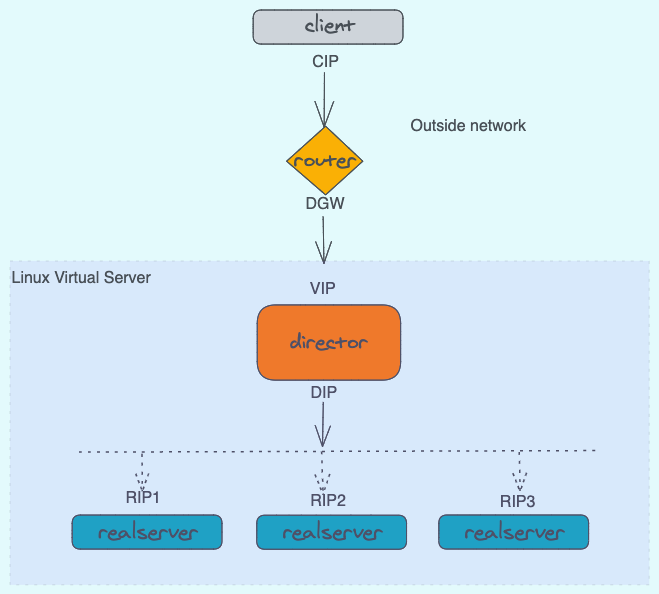

1. 介绍
接上一篇深入理解iptables，kubernetes service技术还用到ipvs技术，讲到ipvs，那就得说说LVS了，这篇我们来了解下LVS具体的实现机制。
2. IPVS
IPVS（IP虚拟服务器）实现传输层负载均衡，通常称为第4层LAN交换。
大多数情况下，负载均衡器和代理这两个术语会被混用在一起，所谓的代理，简单来说，就是接收客户端的数据包再转发到对应的后端服务器上。
ipvs就在这样的软件，它依赖netfilter的功能来实现数据包的转发，我们还是先拉源码定义来看下。
static const struct nf_hook_ops ip_vs_ops4[] = {
/* After packet filtering, change source only for VS/NAT */
{
.hook = ip_vs_reply4,
.pf = NFPROTO_IPV4,
.hooknum = NF_INET_LOCAL_IN,
.priority = NF_IP_PRI_NAT_SRC - 2,
},
/* After packet filtering, forward packet through VS/DR, VS/TUN,
* or VS/NAT(change destination), so that filtering rules can be
* applied to IPVS. */
{
.hook = ip_vs_remote_request4,
.pf = NFPROTO_IPV4,
.hooknum = NF_INET_LOCAL_IN,
.priority = NF_IP_PRI_NAT_SRC - 1,
},
/* Before ip_vs_in, change source only for VS/NAT */
{
.hook = ip_vs_local_reply4,
.pf = NFPROTO_IPV4,
.hooknum = NF_INET_LOCAL_OUT,
.priority = NF_IP_PRI_NAT_DST + 1,
},
/* After mangle, schedule and forward local requests */
{
.hook = ip_vs_local_request4,
.pf = NFPROTO_IPV4,
.hooknum = NF_INET_LOCAL_OUT,
.priority = NF_IP_PRI_NAT_DST + 2,
},
/* After packet filtering (but before ip_vs_out_icmp), catch icmp
* destined for 0.0.0.0/0, which is for incoming IPVS connections */
{
.hook = ip_vs_forward_icmp,
.pf = NFPROTO_IPV4,
.hooknum = NF_INET_FORWARD,
.priority = 99,
},
/* After packet filtering, change source only for VS/NAT */
{
.hook = ip_vs_reply4,
.pf = NFPROTO_IPV4,
.hooknum = NF_INET_FORWARD,
.priority = 100,
},
};
根据定义，ipvs挂载在LOCAL_IN、FORWORD和LOCAL_OUT的hook点上了，根据优先级，我们在iptables流程图上新增了ipvs的位置
{kind=link}
ipvs内部自己针对不同的模式定义了不同hook，在后续的lvs模式中我们再细说。从上图可以看到，ipvs是在不同的hook点上，增加了自己的逻辑，将数据包转发出去。
3. LVS
Linux虚拟服务器（LVS）是服务器的群集，对于外部客户端而言似乎是一个服务器。
3.1 术语
ipvs，在director上执行代理逻辑的代码
lvs，director+realserver，这些服务构成了一个虚拟服务器对client提供服务。
director，运行ipvs代码的节点。client连接到director。director将数据包转发给realserver。director不过是具有使LVS工作的特殊规则的IP路由器
realserver，提供真实服务的主机，处理来自client的请求。
client，连接到director的VIP上的主机或用户级别的进程。
forwarding method(NAT|DR|Tun)，director是一台路由器，与普通路由器相比，其转发数据包的规则有所不同。forwarding method确定director如何将数据包从client发送到realserver。
scheduling，director用来选择realserver以服务于来自client的新连接请求的算法。
3.2 LVS基础架构

在LVS上会有各个IP，我们先看下各个IP代表的组件，便于理解后续的内容。
client IP = CIP
virtual IP = VIP - the IP on the director that the client connects to
director IP = DIP - the IP on the director in the DIP/RIP (DRIP) network
(this is the realserver gateway for LVS-NAT)
realserver IP = RIP (and RIP1, RIP2...) the IP on the realserver
director GW = DGW - the director's gw (only needed for LVS-NAT)
(this can be the realserver gateway for LVS-DR and LVS-Tun)
3.3 转发模式
为便于理解，我们用iptables上的chain来代替各个hook点。
3.3.1 NAT模式原理
外部请求
{kind=link}
- 当
client请求到达director的VIP时，先经过了PREROUTING，然后经过路由判断，为本机ip，进入INPUT，ipvs会判断是首次进入的包，还是已经建立连接的数据包。 - 当为首次进入的包，执行
ip_vs_remote_request的hook，进行realserver的选择，更改目标ip为RIP，当为已经建立连接的数据包，执行ip_vs_reply的hook，直接转发到对应的realserver，更改目标ip为RIP， realserver收到请求后，处理请求，返回的数据要先经过到网关(即director)director收到请求后，判断目标ip为CIP，不是本机ip，进入FORWARD，执行ip_vs_reply的hook，将源ip改为VIP，发送给client
本地请求
{kind=link}
-
当
local_client请求往外发送时，经过了OUTPUT，当为发次连接建立的包时，此时执行ip_vs_local_request的hook，进行realserver选择，将目标ip改为RIP，当为已经建立连接的数据包，则执行ip_vs_local_reply，直接转发给对应的realserver。 -
realserver收到请求后，处理请求，返回数据要先经过到网关(即director) -
director收到请求后，判断目标ip为CIP，并且是本机IP，进入INPUT，执行ip_vs_reply的hook，将源ip改为VIP，发送给local_client。
特性
- RIP 最好是内网ip
realserver的网关必须指向DIP- DIP和RIP必须在同一个网段内
- 请求和回应的报文必须经过
director，因此director容易成为瓶颈 - NAT支持端口转发
3.3.2 DR模式原理
{kind=link}
注：
- realserver必须配置VIP在local网卡上，不然请求到realserver后，realserver会认为不是到本机的请求而丢弃或者转发
- 开启arp抑制
client发送请求到director的VIP上，经过PREROUTING后判断为本机IP，进入INPUT，当为首次请求，执行ip_vs_remote_request的逻辑，若是已建立连接的请求，执行ip_vs_reply的逻辑，将VIP-MAC改为RIP-MAC，VIP不变。- 经过arp解析后，
realserver收到请求，解析后发现为本机IP，做请求处理。并响应客户端请求。 realserver通过自己连接的对应的交换机路由器，将数据包发送给客户端。
DR模式下director的状态机问题
由上面可知，DR模式下，director只接收请求，不回复请求，那么在director上面，TCP连接的状态机是怎样的呢？
我们知道，一般来说，服务端会有这么几个TCP状态，LISTEN、SYN-RECEIVED、ESTABLISH、CLOSE_WAIT、LAST_ACK状态，但是，director实际上并不处理请求，那当客户端的请求过来后，director要怎么更新自己的状态呢？
- 当收到TCP包中SYN的标志位为1时，
director将该连接的的状态机更新为SYN-RECEIVED - 当收到TCP包中ACK的标志位为1时，就将TCP状态机更新为
ESTABLISH - 当收到TCP包中FIN和ACK标志位为1时，就将TCP状态机更新为
LAST_ACK状态
特性
- 保证前端路由将目标地址为VIP的报文统统发给
director，而不是realserver director和realserver的VIP为同一个VIPrealserver可以使用私有地址，也可以是公网地址。如果使用公网地址，此时可以通过互联网对RIP进行直接访问realserver跟director必须在同一个物理网络中- 所有的请求报文经过
director，但响应报文必须不能经过realserver - 不支持地址转换，也不支持端口映射
realserver可以是大多数常见的操作系统realserver的网关决不允许指向DIP（因为我们不允许响应经过director)realserver上的lo接口绑定VIP地址- DR模式是市面上用的最广的。
3.3.3 TUN模式
Tun模式基于DR模式，不过增加了一步IP隧道封装，实现了跨网段传输的功能。
{kind=link}
client发送请求到director的VIP上，经过PREROUTING后判断为本机IP，进入INPUT，当为首次请求，执行ip_vs_remote_request的逻辑，若是已建立连接的请求，执行ip_vs_reply的逻辑，在原IP首部上添加新的源IP为DIP，目的IP为RIP的IP首部，然后通过POSTROUTING发送出去- 经过路由，到达真实的realserver
- 经过arp解析后，
realserver收到请求，经过两层解析后发现为本机IP，做请求处理。并响应客户端请求。 realserver通过自己连接的对应的交换机路由器，将数据包发送给客户端。
特性
- RIP、VIP、DIP全是公网地址
realserver的网关不会也不可能指向DIP- 所有的请求报文经过
director，但响应报文必须不能经过director - 不支持端口映射
realserver的系统必须支持IP隧道
3.4 ARP广播问题
在DR模式下时，会存在一个问题，我所有的realserver和director都配置了VIP，从网络模型中，我们知道，最终传输的是mac地址，那么这个时候，到底谁的mac地址是准确的呢？ 我们要保证请求的VIP必须是director，这样我们的负载均衡才是生效的，因此要在realserver上进行ARP抑制配置，禁止它处理外部的arp请求，也不允许自己向外部广播ARP数据
echo "1" >/proc/sys/net/ipv4/conf/lo/arp_ignore ## 忽略收到的ARP请求
echo "2" >/proc/sys/net/ipv4/conf/lo/arp_announce ## lo接口不对外广播ARP数据
echo "1" >/proc/sys/net/ipv4/conf/all/arp_ignore
echo "2" >/proc/sys/net/ipv4/conf/all/arp_announce
arp_ignore: 定义接收到ARP请求时的相应级别
0 -- 只要本地配置有相应地址，就给予响应
1 -- 仅回应目标IP地址为接收网卡本地地址的ARP请求
2 -- 只响应目标IP地址为接收网卡本地地址的ARP请求，并且arp请求的源IP必须和接收网卡同网段
4~7 -- 保留未使用
8 -- 不回应所有ARP请求
arp_announce: 定义将自己的地址向外通告时的通告级别
0 -- 将本地任何接口上的任何地址向外通告
1 -- 试图仅向目标网络通告与其网络匹配的地址
2 -- 仅向与本地接口上地址匹配的网络进行通告
3.5 Keepalived相关
假设主备 director包含rs， 可以这样处理：
经过 director1 的包，如果 mac address 不是 director2 的，用 iptables 给包打 mark=i 经过 director2 的包，如果 mac address 不是 director1 的，用 iptables 给包打 mark=j 同时配置 LVS，不用三元组(ip,port,protocol)来表示 virtual_server，而用 fwmark-service，keepalived 配置 lvs 使用 fwmark-service。 这样，如果是 director 转发过来的包，就不会进入 LVS 进行负载（防止两个 director 互相扔皮球，进入死循环），而是被 RS 服务处理。而客户端进来的包，就会进入 LVS 进行负载。
iptables -t mangle -I PREROUTING -d $VIP -p tcp -m tcp --dport $VPORT -m mac ! --mac-source $MAC_Director2 -j MARK --set-mark 0x3
iptables -t mangle -I PREROUTING -d $VIP -p tcp -m tcp --dport $VPORT -m mac ! --mac-source $MAC_Director1 -j MARK --set-mark 0x4
#keealived configuration
virtual_server fwmark 3 { # node2 配置 fwmark 4
delay_loop 10
lb_algo rr
lb_kind DR
protocol TCP
real_server RIP1 8080 {
weight 1
MISC_CHECK {
# some check configuration
}
}
real_server RIP2 8080 {
weight 1
MISC_CHECK {
# some check configuration
}
}
4. 总结
本篇讲述了ipvs的工作机制，以及LVS相关模式的实现原理。在kubernetes下的话用的是ipvs的nat模式。搞懂了这个，对理解kubernetes的service帮助很大。
参考
https://ivanzz1001.github.io/records/post/lb/2018/06/01/lb_lvs_part2